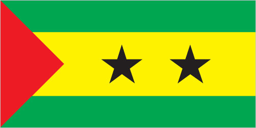
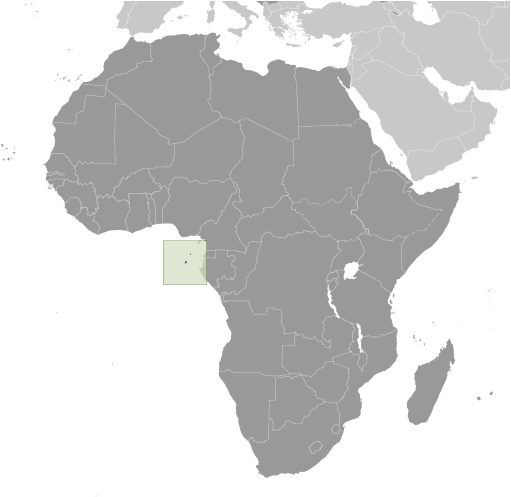
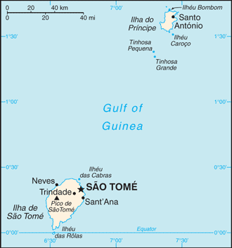

Africa :: SAO TOME AND PRINCIPE
Introduction :: SAO TOME AND PRINCIPE
-
Discovered and claimed by Portugal in the late 15th century, the islands' sugar-based economy gave way to coffee and cocoa in the 19th century - all grown with African plantation slave labor, a form of which lingered into the 20th century. While independence was achieved in 1975, democratic reforms were not instituted until the late 1980s. The country held its first free elections in 1991, but frequent internal wrangling between the various political parties precipitated repeated changes in leadership and four failed, non-violent coup attempts in 1995, 1998, 2003, and 2009. In 2012, three opposition parties combined in a no confidence vote to bring down the majority government of former Prime Minister Patrice TROVOADA, but in 2014, legislative elections returned him to the office. President Evaristo CARVALHO, of the same political party as Prime Minister TROVOADA, was elected in September 2016, marking a rare instance in which the positions of president and prime minister are held by the same party. New oil discoveries in the Gulf of Guinea may attract increased attention to the small island nation.
Geography :: SAO TOME AND PRINCIPE
-
Central Africa, islands in the Gulf of Guinea, just north of the Equator, west of Gabon1 00 N, 7 00 EAfricatotal: 964 sq kmland: 964 sq kmwater: 0 sq kmcountry comparison to the world: 185more than five times the size of Washington, DC0 km209 kmmeasured from claimed archipelagic baselinesterritorial sea: 12 nmexclusive economic zone: 200 nmtropical; hot, humid; one rainy season (October to May)volcanic, mountainousmean elevation: NAelevation extremes: lowest point: Atlantic Ocean 0 mhighest point: Pico de Sao Tome 2,024 mfish, hydropoweragricultural land: 50.7%arable land 9.1%; permanent crops 40.6%; permanent pasture 1%forest: 28.1%other: 21.2% (2011 est.)100 sq km (2012)Sao Tome, the capital city, has roughly a quarter of the nation's population; Santo Antonio is the largest town on Principe; the northern areas of both islands have the highest population densitiesfloodingdeforestation; soil erosion and exhaustionparty to: Biodiversity, Climate Change, Climate Change-Kyoto Protocol, Desertification, Endangered Species, Environmental Modification, Law of the Sea, Ozone Layer Protection, Ship Pollution, Wetlandssigned, but not ratified: none of the selected agreementsthe smallest country in Africa; the two main islands form part of a chain of extinct volcanoes and both are mountainous
People and Society :: SAO TOME AND PRINCIPE
-
201,025 (July 2017 est.)country comparison to the world: 184noun: Sao Tomean(s)adjective: Sao Tomeanmestico, angolares (descendants of Angolan slaves), forros (descendants of freed slaves), servicais (contract laborers from Angola, Mozambique, and Cabo Verde), tongas (children of servicais born on the islands), Europeans (primarily Portuguese), Asians (mostly Chinese)Portuguese 98.4% (official), Forro 36.2%, Cabo Verdian 8.5%, French 6.8%, Angolar 6.6%, English 4.9%, Lunguie 1%, other (including sign language) 2.4%note: shares sum to more than 100% because some respondents gave more than one answer on the census (2012 est.)Catholic 55.7%, Adventist 4.1%, Assembly of God 3.4%, New Apostolic 2.9%, Mana 2.3%, Universal Kingdom of God 2%, Jehovah's Witness 1.2%, other 6.2%, none 21.2%, unspecified 1% (2012 est.)Sao Tome and Principe’s youthful age structure – more than 60% of the population is under the age of 25 – and high fertility rate ensure future population growth. Although Sao Tome has a net negative international migration rate, emigration is not a sufficient safety valve to reduce already high levels of unemployment and poverty. While literacy and primary school attendance have improved in recent years, Sao Tome still struggles to improve its educational quality and to increase its secondary school completion rate. Despite some improvements in education and access to healthcare, Sao Tome and Principe has much to do to decrease its high poverty rate, create jobs, and increase its economic growth.The population of Sao Tome and Principe descends primarily from the islands’ colonial Portuguese settlers, who first arrived in the late 15th century, and the much larger number of African slaves brought in for sugar production and the slave trade. For about 100 years after the abolition of slavery in 1876, the population was further shaped by the widespread use of imported unskilled contract laborers from Portugal’s other African colonies, who worked on coffee and cocoa plantations. In the first decades after abolition, most workers were brought from Angola under a system similar to slavery. While Angolan laborers were technically free, they were forced or coerced into long contracts that were automatically renewed and extended to their children. Other contract workers from Mozambique and famine-stricken Cape Verde first arrived in the early 20th century under short-term contracts and had the option of repatriation, although some chose to remain in Sao Tome and Principe.Today’s Sao Tomean population consists of mesticos (creole descendants of the European immigrants and African slaves that first inhabited the islands), forros (descendants of freed African slaves), angolares (descendants of runaway African slaves that formed a community in the south of Sao Tome Island and today are fishermen), servicais (contract laborers from Angola, Mozambique, and Cape Verde), tongas (locally born children of contract laborers), and lesser numbers of Europeans and Asians.0-14 years: 41.85% (male 42,781/female 41,354)15-24 years: 20.68% (male 21,070/female 20,507)25-54 years: 30.82% (male 30,454/female 31,509)55-64 years: 3.81% (male 3,515/female 4,140)65 years and over: 2.83% (male 2,523/female 3,172) (2017 est.)total dependency ratio: 86.7youth dependency ratio: 81.1elderly dependency ratio: 5.6potential support ratio: 17.8 (2015 est.)total: 18.4 yearsmale: 18 yearsfemale: 18.8 years (2017 est.)country comparison to the world: 2141.72% (2017 est.)country comparison to the world: 6432.4 births/1,000 population (2017 est.)country comparison to the world: 316.8 deaths/1,000 population (2017 est.)country comparison to the world: 138-8.3 migrant(s)/1,000 population (2017 est.)country comparison to the world: 208Sao Tome, the capital city, has roughly a quarter of the nation's population; Santo Antonio is the largest town on Principe; the northern areas of both islands have the highest population densitiesurban population: 66.2% of total population (2017)rate of urbanization: 3.03% annual rate of change (2015-20 est.)SAO TOME (capital) 71,000 (2014)at birth: 1.03 male(s)/female0-14 years: 1.03 male(s)/female15-24 years: 1.03 male(s)/female25-54 years: 0.96 male(s)/female55-64 years: 0.84 male(s)/female65 years and over: 0.81 male(s)/femaletotal population: 1 male(s)/female (2016 est.)19.4 yearsnote: median age at first birth among women 25-29 (2008/09 est.)156 deaths/100,000 live births (2015 est.)country comparison to the world: 58total: 45.3 deaths/1,000 live birthsmale: 47.2 deaths/1,000 live birthsfemale: 43.3 deaths/1,000 live births (2017 est.)country comparison to the world: 40total population: 65.3 yearsmale: 63.9 yearsfemale: 66.7 years (2017 est.)country comparison to the world: 1784.25 children born/woman (2017 est.)country comparison to the world: 3040.6% (2014)8.4% of GDP (2014)country comparison to the world: 492.9 beds/1,000 population (2011)improved:urban: 98.9% of populationrural: 93.6% of populationtotal: 97.1% of populationunimproved:urban: 1.1% of populationrural: 6.4% of populationtotal: 2.9% of population (2015 est.)improved:urban: 40.8% of populationrural: 23.3% of populationtotal: 34.7% of populationunimproved:urban: 59.2% of populationrural: 76.7% of populationtotal: 65.3% of population (2015 est.)NANANAdegree of risk: highfood or waterborne diseases: bacterial diarrhea, hepatitis A, and typhoid fevervectorborne diseases: malaria and dengue feverwater contact disease: schistosomiasis (2016)12.4% (2016)country comparison to the world: 1338.8% (2014)country comparison to the world: 503.9% of GDP (2014)country comparison to the world: 6definition: age 15 and over can read and writetotal population: 74.9%male: 81.8%female: 68.4% (2015 est.)total: 13 yearsmale: 13 yearsfemale: 13 years (2015)total: 20.8%male: NAfemale: NA (2012 est.)
Government :: SAO TOME AND PRINCIPE
-
conventional long form: Democratic Republic of Sao Tome and Principeconventional short form: Sao Tome and Principelocal long form: Republica Democratica de Sao Tome e Principelocal short form: Sao Tome e Principeetymology: Sao Tome was named after Saint THOMAS the Apostle by the Portuguese who discovered the island on 21 December 1470 (or 1471), the saint's feast day; Principe is a shortening of the original Portuguese name of "Ilha do Principe" (Isle of the Prince) referring to the Prince of Portugal to whom duties on the island's sugar crop were paidsemi-presidential republicname: Sao Tomegeographic coordinates: 0 20 N, 6 44 Etime difference: UTC 0 (5 hours ahead of Washington, DC, during Standard Time)2 provinces; Principe, Sao Tome12 July 1975 (from Portugal)Independence Day, 12 July (1975)history: approved 5 November 1975amendments: proposed by the National Assembly; passage requires two-thirds majority vote by the Assembly; the Assembly can propose to the president of the republic that an amendment be submitted to a referendum; revised several times, last in 2006 (2017)mixed legal system of civil law base on the Portuguese model and customary lawhas not submitted an ICJ jurisdiction declaration; non-party state to the ICCtcitizenship by birth: nocitizenship by descent only: at least one parent must be a citizen of Sao Tome and Principedual citizenship recognized: noresidency requirement for naturalization: 5 years18 years of age; universalchief of state: President Evaristo CARVALHO (since 3 September 2016)head of government: Prime Minister Patrice Emery TROVOADA (since 29 November 2014)cabinet: Council of Ministers proposed by the prime minister, appointed by the presidentelections/appointments: president directly elected by absolute majority popular vote in 2 rounds if needed for a 5-year term (eligible for a second term); election last held on 7 July 2016 and 7 August 2016 (next to be held in July 2021); prime minister chosen by the National Assembly and approved by the presidentelection results: Evaristo CARVALHO elected president; percent of vote - Evaristo CARVALHO (ADI) 49.8%, Manuel Pinto DA COSTA (independent) 24.8%, Maria DAS NEVES (MLSTP-PSD) 24.1%; note - first round results for CARVALHO were revised downward from just over 50%, prompting the 7 August runoff; however, on 1 August 2016 DA COSTA withdrew from the runoff, citing voting irregularities, and CARVALHO was declared the winnerdescription: unicameral National Assembly or Assembleia Nacional (55 seats; members directly elected in multi-seat constituencies by proportional representation vote to serve 4-year terms)elections: last held on 12 October 2014 (next to be held in October 2018)election results: percent of vote by party - ADI 52.6%, MLSTP-PSD 24.7%, PCD-GR 11%, other 11.7%; seats by party - ADI 33, MLSTP-PSD 16, PCD-GR 5, other 1highest court(s): Supreme Court or Supremo Tribunal Justica (consists of 5 judges); Constitutional Court or Tribunal Constitucional (consists of 5 judges, 3 of whom are from the Supreme Court)judge selection and term of office: Supreme Court judges appointed by the National Assembly; judge tenure NA; Constitutional Court judges nominated by the president of the republic and elected by the National Assembly for 5-year termssubordinate courts: Court of First Instance; Audit CourtForce for Democratic Change Movement or MDFM [Fradique Bandeira Melo DE MENEZES]Independent Democratic Action or ADI [Patrice TROVOADA]Movement for the Liberation of Sao Tome and Principe-Social Democratic Party or MLSTP-PSD [Aurelio MARTINS]Party for Democratic Convergence-Reflection Group or PCD-GR [Leonel Mario D'ALVA]other small partiesAssociation of Sao Tome and Principe NGOs or FONGother: mediaACP, AfDB, AOSIS, AU, CD, CEMAC, CPLP, EITI (candidate country), FAO, G-77, IBRD, ICAO, ICRM, IDA, IFAD, IFC, IFRCS, ILO, IMF, IMO, Interpol, IOC, IOM (observer), IPU, ITU, ITUC (NGOs), MIGA, NAM, OIF, OPCW, PCA, UN, UNCTAD, UNESCO, UNIDO, Union Latina, UNWTO, UPU, WCO, WHO, WIPO, WMO, WTO (observer)chief of mission: Ambassador Carlos Filomeno Azevedo Agostinho das NEVES (since 3 December 2013)chancery: 675 Third Avenue, Suite 1807, New York, NY 10017telephone: [1] (212) 651-8116FAX: [1] (212) 651-8117the US does not have an embassy in Sao Tome and Principe; the US Ambassador to Gabon is accredited to Sao Tome and Principe on a nonresident basisthree horizontal bands of green (top), yellow (double width), and green with two black five-pointed stars placed side by side in the center of the yellow band and a red isosceles triangle based on the hoist side; green stands for the country's rich vegetation, red recalls the struggle for independence, and yellow represents cocoa, one of the country's main agricultural products; the two stars symbolize the two main islandsnote: uses the popular Pan-African colors of Ethiopiapalm tree; national colors: green, yellow, red, blackname: "Independencia total" (Total Independence)lyrics/music: Alda Neves DA GRACA do Espirito Santo/Manuel dos Santos Barreto de Sousa e ALMEIDAnote: adopted 1975
Economy :: SAO TOME AND PRINCIPE
-
This small, poor island economy has become increasingly dependent on cocoa since independence in 1975. Cocoa production has substantially declined in recent years because of drought and mismanagement. Sao Tome and Principe has to import fuels, most manufactured goods, consumer goods, and food, making it vulnerable to fluctuations in global commodity prices. Maintaining control of inflation, fiscal discipline, and increasing flows of foreign direct investment into the nascent oil sector are major economic problems facing the country. The government also has attempted to reduce price controls and subsidies.Over the years, Sao Tome and Principe has had difficulty servicing its external debt and has relied heavily on concessional aid and debt rescheduling. It benefited from $200 million in debt relief in December 2000 under the Highly Indebted Poor Countries program, which helped bring down the country's $300 million debt burden. In April 2011, the country completed a Threshold Country Program with The Millennium Challenge Corporation to help increase tax revenues, reform customs, and improve the business environment. In 2016, Sao Tome and Portugal signed a five-year cooperation agreement worth approximately $64 million, some of which will be provided as loans.Considerable potential exists for development of a tourist industry, and the government has taken steps to expand facilities in recent years. Potential also exists for the development of petroleum resources in Sao Tome and Principe's territorial waters in the oil-rich Gulf of Guinea, which are being jointly developed in a 60-40 split with Nigeria, but any actual production is at least several years off. Volatile aid and investment inflows, even with a growing tourism sector, have kept growth moderate at around 4% annually, which is insufficient to alleviate poverty. The IMF in late 2016 expressed concern about the country’s banking sector vulnerabilities.$638 million (2016 est.)$606 million (2015 est.)$576 million (2014 est.)note: data are in 2016 dollarscountry comparison to the world: 209$351 million (2016 est.)4.1% (2016 est.)4% (2015 est.)4.1% (2014 est.)country comparison to the world: 60$3,100 (2016 est.)$3,000 (2015 est.)$3,000 (2014 est.)note: data are in 2016 dollarscountry comparison to the world: 19221.6% of GDP (2016 est.)19.1% of GDP (2015 est.)3.3% of GDP (2014 est.)country comparison to the world: 90household consumption: 81.2%government consumption: 20.8%investment in fixed capital: 33.3%investment in inventories: 0%exports of goods and services: 8.8%imports of goods and services: -44.2% (2016 est.)agriculture: 12.1%industry: 14.8%services: 73.2% (2016 est.)cocoa, coconuts, palm kernels, copra, cinnamon, pepper, coffee, bananas, papayas, beans; poultry; fishlight construction, textiles, soap, beer, fish processing, timber4.5% (2016 est.)country comparison to the world: 5367,870 (2016 est.)country comparison to the world: 187agriculture: 26.1%industry: 21.4%services: 52.5% (2014 est.)12.6% (2016 est.)13.6% (2015 est.)country comparison to the world: 16366.2% (2009 est.)lowest 10%: NA%highest 10%: NA%revenues: $105.6 millionexpenditures: $120 million (2016 est.)30.2% of GDP (2016 est.)country comparison to the world: 77-4.1% of GDP (2016 est.)country comparison to the world: 14258.8% of GDP (2016 est.)56.7% of GDP (2015 est.)country comparison to the world: 75calendar year5.4% (2016 est.)5.2% (2015 est.)country comparison to the world: 17616% (31 December 2009)28% (31 December 2008)country comparison to the world: 819.59% (31 December 2016 est.)23.31% (31 December 2015 est.)country comparison to the world: 16$65.47 million (31 December 2016 est.)$63.82 million (31 December 2015 est.)country comparison to the world: 190$116.3 million (31 December 2016 est.)$126.7 million (31 December 2015 est.)country comparison to the world: 194$72.19 million (31 December 2016 est.)$72.71 million (31 December 2015 est.)country comparison to the world: 188$NA$-22 million (2016 est.)$-68.6 million (2015 est.)country comparison to the world: 66$13.6 million (2016 est.)$11.3 million (2015 est.)country comparison to the world: 216cocoa 80%, copra, coffee, palm oil (2010 est.)Germany 23.3%, Netherlands 13.8%, Portugal 10%, Angola 6.4%, South Korea 5.2%, Peru 4.5%, Dominican Republic 4.1% (2016)$119.1 million (2016 est.)$118.9 million (2015 est.)country comparison to the world: 214machinery and electrical equipment, food products, petroleum productsPortugal 58.8%, Angola 15.2%, China 5.3% (2016)$61.5 million (31 December 2016 est.)$72.86 million (31 December 2015 est.)country comparison to the world: 168$308.5 million (31 December 2016 est.)$249.4 million (31 December 2015 est.)country comparison to the world: 186$430.3 million (31 December 2016 est.)$409.5 million (31 December 2015 est.)country comparison to the world: 125$2.2 million (31 December 2016 est.)$2.5 million (31 December 2015 est.)country comparison to the world: 111dobras (STD) per US dollar -22,149 (2016 est.)22,149 (2015 est.)22,091 (2014 est.)18,466 (2013 est.)19,068 (2012 est.)
Energy :: SAO TOME AND PRINCIPE
-
population without electricity: 100,000electrification - total population: 59%electrification - urban areas: 70%electrification - rural areas: 40% (2013)66 million kWh (2015 est.)country comparison to the world: 20461.38 million kWh (2015 est.)country comparison to the world: 2020 kWh (2016)country comparison to the world: 2050 kWh (2016 est.)country comparison to the world: 20920,000 kW (2015 est.)country comparison to the world: 20580% of total installed capacity (2015 est.)country comparison to the world: 900% of total installed capacity (2015 est.)country comparison to the world: 19320% of total installed capacity (2015 est.)country comparison to the world: 890% of total installed capacity (2015 est.)country comparison to the world: 2080 bbl/day (2016 est.)country comparison to the world: 2020 bbl/day (2014 est.)country comparison to the world: 1990 bbl/day (2014 est.)country comparison to the world: 1980 bbl (1 January 2017)country comparison to the world: 2020 bbl/day (2014 est.)country comparison to the world: 2031,000 bbl/day (2015 est.)country comparison to the world: 2070 bbl/day (2014 est.)country comparison to the world: 2041,001 bbl/day (2014 est.)country comparison to the world: 2010 cu m (2013 est.)country comparison to the world: 2030 cu m (2013 est.)country comparison to the world: 1380 cu m (2013 est.)country comparison to the world: 1950 cu m (2013 est.)country comparison to the world: 1960 cu m (1 January 2014 es)country comparison to the world: 201100,000 Mt (2013 est.)country comparison to the world: 207
Communications :: SAO TOME AND PRINCIPE
-
total subscriptions: 5,733subscriptions per 100 inhabitants: 3 (July 2016 est.)country comparison to the world: 205total: 132,000subscriptions per 100 inhabitants: 68 (July 2016 est.)country comparison to the world: 187general assessment: local telephone network of adequate quality with most lines connected to digital switchesdomestic: combined fixed-line and mobile-cellular teledensity roughly 70 telephones per 100 personsinternational: country code - 239; satellite earth station - 1 Intelsat (Atlantic Ocean) (2016)1 government-owned TV station; 1 government-owned radio station; 3 independent local radio stations authorized in 2005 with 2 operating at the end of 2006; transmissions of multiple international broadcasters are available (2007).sttotal: 50,000percent of population: 25.8% (July 2016 est.)country comparison to the world: 186
Transportation :: SAO TOME AND PRINCIPE
-
number of registered air carriers: 1inventory of registered aircraft operated by air carriers: 1annual passenger traffic on registered air carriers: 50,716annual freight traffic on registered air carriers: 0 mt-km (2015)S9 (2016)2 (2013)country comparison to the world: 206total: 21,524 to 2,437 m: 1914 to 1,523 m: 1 (2017)total: 320 kmpaved: 218 kmunpaved: 102 km (2000)country comparison to the world: 206total: 3by type: bulk carrier 1, cargo 2foreign-owned: 2 (China 1, Greece 1) (2010)country comparison to the world: 139major seaport(s): Sao Tome
Military and Security :: SAO TOME AND PRINCIPE
-
Armed Forces of Sao Tome and Principe (Forcas Armadas de Sao Tome e Principe, FASTP): Army, Coast Guard of Sao Tome e Principe (Guarda Costeira de Sao Tome e Principe, GCSTP; also called "Navy"), Presidential Guard, National Guard (2015)18 is the legal minimum age for compulsory military service; 17 is the legal minimum age for voluntary service (2012)Sao Tome and Principe's army is a tiny force with almost no resources at its disposal and would be wholly ineffective operating unilaterally; infantry equipment is considered simple to operate and maintain but may require refurbishment or replacement after 25 years in tropical climates; poor pay, working conditions, and alleged nepotism in the promotion of officers have been problems in the past, as reflected in the 1995 and 2003 coups; these issues are being addressed with foreign assistance aimed at improving the army and its focus on realistic security concerns; command is exercised from the president, through the Minister of Defense, to the Chief of the Armed Forces (infantry, technical issues) and the Chief of the General Staff (logistics, administration, finances) (2012)
Transnational Issues :: SAO TOME AND PRINCIPE
-
none